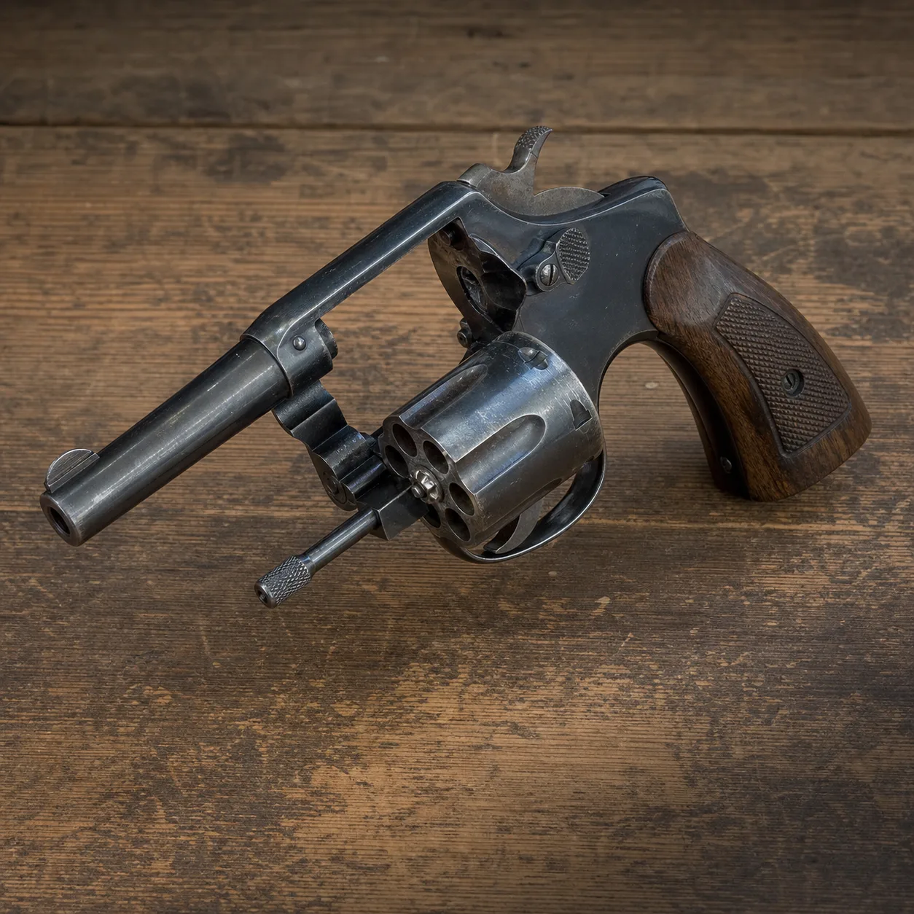

Rewolwer .32
.32 Snubnose Revolver
Prompt studyjny
Photorealistic period object study of a compact blued steel .32 caliber revolver with hard rubber checkered grips, resting on a dark wooden table beside a vintage leather wallet, dramatic noir side lighting, square composition, no hands, no people